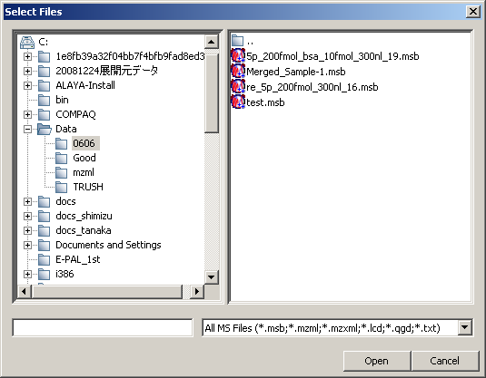

Select [File] in the menu bar and then select [Import] > [Raw data] from the drop down menu.
The Select Files dialog appears.
The Select Files dialog can also be displayed by clicking the
 icon in the toolbar or using the Ctrl+O shortcut.
icon in the toolbar or using the Ctrl+O shortcut.
Select files and click [Open].
You can select multiple files by holding down the [Ctrl] key while selecting the files.
The files currently opened are shown in the Sample Tree.
Note: When an AXIMA Data File (.run) is opened, if the filename is LCSPOTS0001.RUN, and it contains MS1 data, Mass++ assumes that it is AccuSpot data. It will search in the same folder for MS2 data with the naming format SS-HH-MM-CC-PPPP-FFFF.run (SS - spot number, HH - hour, MM - minute, CC - second, PPPP - precursor mass, FFFF - suffix). Then, for each spectrum in LCSPOTS0001.RUN, if there is an MS2 data file with the same spot number, the precursor ion - product ion spectrum relationship is deduced, and that .run file is automatically opened and displayed in the Sample Tree.
Select [File] in the menu bar and then select [Export] > [Sample] from the drop down menu.
The Export Sample dialog appears.

Select the target and the format.
Target.
- Current Spectrum
Select this option when you want to export the spectrum currently displayed.
- Current Chromatogram
Select this option when you want to export the chromatogram currently displayed.
- Filtered Spectra
Select this option when you want to export the filtered spectra.
- Sample
Select this option when you want to export the whole sample.
- Latest Search Results
Select this option when you want to export the latest database search results.
Note. The target options you can select vary depending on the data currently opened.
Format.
- Mascot Generic Format (*.txt)
This format saves MS/MS peaks information for Mascot Ion Search. You have to perform peak detection before exporting to this format. (You can select this format when the target is "Current Spectrum", "Filtered Spectra" or "Sample".)
- Mass Spectrum Binary File (*.msb)
Mass++ original binary format. Mass++ can read this format without requiring any additional software. (All targets can be saved in this format.)
- mzML File (*.mzML)
A new data format for mass spectrometry. It is a combination of mzData and mzXML and was developed by the Proteomics Standards Initiative (PSI). (All targets can be saved in this format.)
- mzXML File (*.mzXML)
An open data format for storage and exchange of mass spectroscopy data, developed at the SPC/Institute for Systems Biology. (All targets can be saved in this format.)
- 2D Peak List (*.txt)
This format saves peak information from the Heatmap/3D Display view. (You can select this format when the target is "Sample".)
- PNG File (Spectrum) (*.png)
A spectrum image is saved in PNG format. (You can select this format when the target is "Current Spectrum".)
- PNG File (Chromatogram) (*.png)
A chromatogram image is saved in PNG format. (You can select this format when the target is "Current Chromatogram".)
- Data Points Tab Separated Values File (*.txt)
This format saves the m/z and intensity values of all the spectra in the sample. (You can select this format when the target is "Current Spectrum", "Filtered Spectra" or "Sample".)
- Search Results Tab Separated Values File (*.txt)
This format saves the results of the latest database search. (You can select this format when the target is "Latest Search Results".)
Note. The format options you can select vary depending on the target option you have selected.
Click [Export].
The Save As dialog appears.
Enter the filename and click [Save].
Note. The folder and the file name should be consist of only alphabetic and allowed symbol characters. (They should not contain non-English characters.)